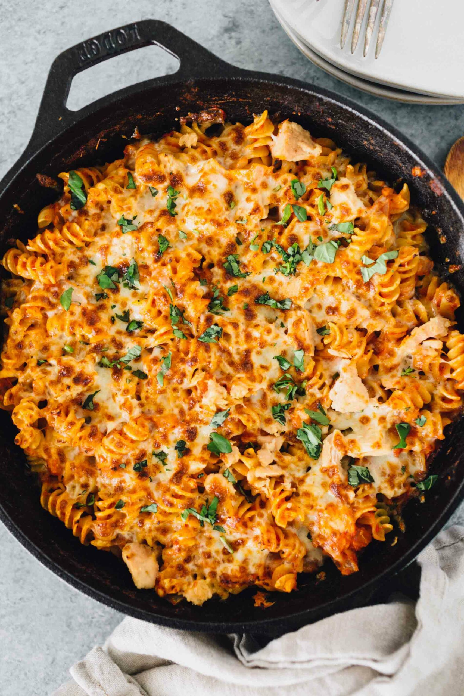

Tuna Pasta Bake

What is a tuna pasta bake?
Tuna pasta bake is a pasta dish that is full
of flavour. It typically contains onions and garlic
which adds
to the seasoning. Tuna pasta bake is popular in western
Countries, specifically the United Kingdom
Ingredients List
- Tuna
- Pasta(Your Choice)
- Onions
- Garlic
- Chopped tomatoes
- Oregano
Steps to Make
- Cut onions and add to pan.
- Add tuna and chopped tomatoes.
- Add garlic.
- Bring to boil and then let it marinate.
- Prepare pasta.
- Add pasta to main dish.
- Add cheese and bake in oven for 25 minutes.